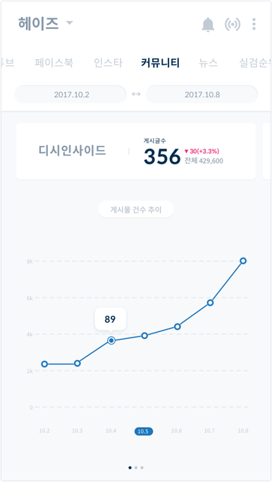

-
OVERVIEW
Peter is a web application that provides real-time charts, playlists and social data of Korean musicians at your fingertips. It provides actionable music data in real time, which makes users aware of how their songs are consumed in SNS and web.
I focused on data visualization that helps musicians, who are not familiar with numeric data, understand their data more easily. -
Clients
Space-oddity
My Role
Concept + UX & Design
Platform
Web application
Year
2017
Background
Peter: Market Analytics Tool for Music Industry
To start the project, it was important to understand how my client got to start this business. Space Oddity, music entertainment company found that musicians and their agency want to be keep track of the music consumption and musicians’ popularity. To solve this problem, Space Oddity gather online data related to musicians and provide valuable consult to their clients based on the analysis of massive music data. Peter monitors 6 charts, social profiles, radio, TV and other several websites in real-time.
Problem
Crawling data from all sources, but how to categorize and present them?
Peter offers actionable data to help users stay informed and make better decisions. Categorizing the data by the same update period category had to be primarily done.
There are so many crawling lists, of which have diffrent update period and they needed to be diffrently displayed in the UI.
Goals
-
Organizing Content
Organizing content should be done in a way that encourages user interaction, easy skimming, and accessible entry to other menus.
-
Data visualization
Since understanding numeric data takes a lot of efforts, data should be visualized in explicit and simple way
-
Branding
The UI style should be hip enough to entertain users since its original version looked old-fashioned like the typical analytic solution tool
Framework 1
Information architecture Iterations
The former UI of Peter app had several iterations on information architecture. It had several sub-menus of their sub-menus, which makes too many depths. It was hard for users to navigate the menu. I suggested that the menu should be simpler with the only one sub-menu. As a result, the last version of Peter’s architecture became much more effective and easy to navigate.

Framework 2
Mid fidelity Wireframe
Our biggest challenge in this project was designing the navigation of the data from various sources. The sources of our contents were SNS(Facebook, Instagram), Music streaming service(Melon, Bugs, Mnet, Naver Music, Genie, Soribada), Search engine(Naver, Daum etc). To organize the contents, we categorized the menu into two main sections. The first one was updated by pushing the renew button, and the other one was crawling data within the range that users manually set.

Design Process
Case Study for Data Visualization UI
Before diving into UI design concept, case study should be done in data-related UI design area.

Design Process
Light, no-clutter, accent-focused UI Design
My client and I decided to go with a light, no-clutter, accent-focused color scheme Version A, to help users visualize sentiment easily through bright and two contrary colors against a neutral environment.

My client were given the choices between 3 UI concepts and they were satisfied with their final decision.
The Final Design - UI
Home Screen
The home screen is designed to encourage user interaction. Swiping left and right allows direct access to every data in the application. The segmented bar has all categories, which makes artists reach the other data easily with swiping left and right.
The Final Design – Interaction
Soundchart Monitoring
Soundcharts in Peter monitors across 6 music streaming services in real-time. It provides an overview for quick reporting as well as an in depths view, choose to dive in to access hourly ranking status and their rank in the service.

The Final Design – Visual language
Data visualization
One of the key features Peter offers is that it gives the information about how people react to their songs. Peter should help users to detect positive, negative and neutral reactions through the line graph, pie chart and scatterplots. Visualization of sentiment analysis helps musicians and agencies to understand the positive and negative reaction of the content easily.
Style guide
-

Today Views
-
Sentiment Analaysis
-

Keywords

Takeaway
Data analytics tool at your fingertips
너무 재미없는 데이터분석 툴 같은 느낌이 아닌, 뮤지션들이 자신의 데이터를 좀 더 쉽고, 편안하게 접근할 수 있게 하는 것이 목적. 쉽게 접근하고 자주 드나들 수 있는 서비스. - Data visulization - Communications skill - Understanding their needs